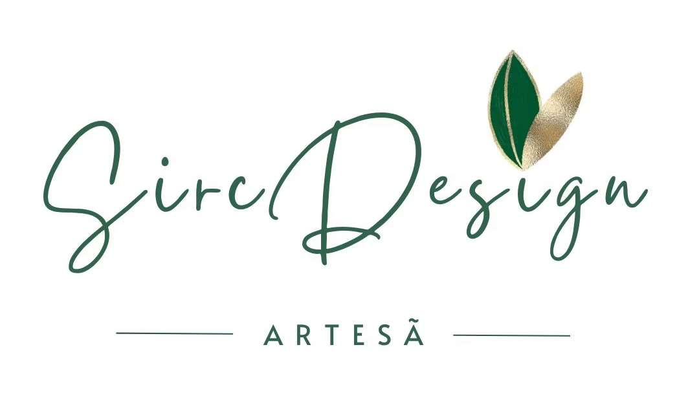
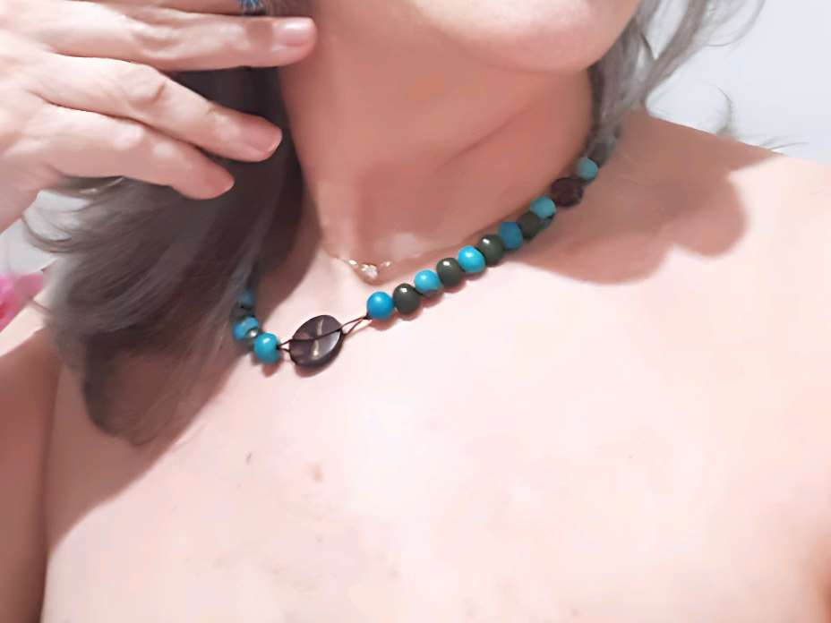
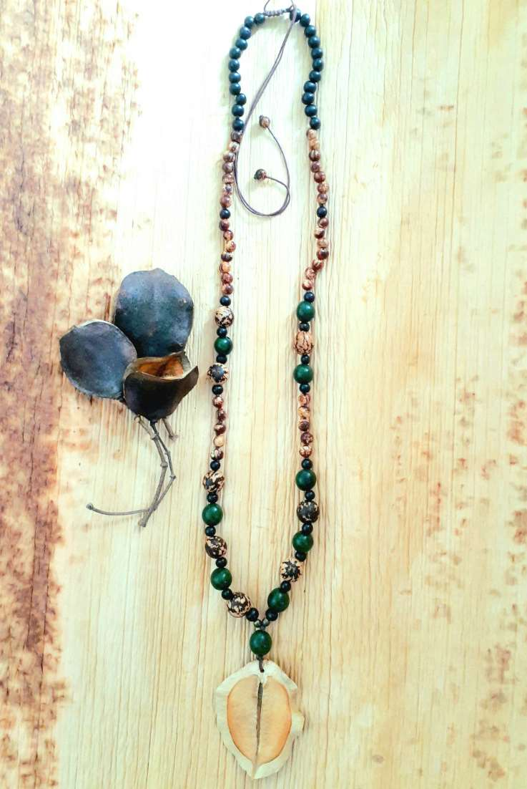
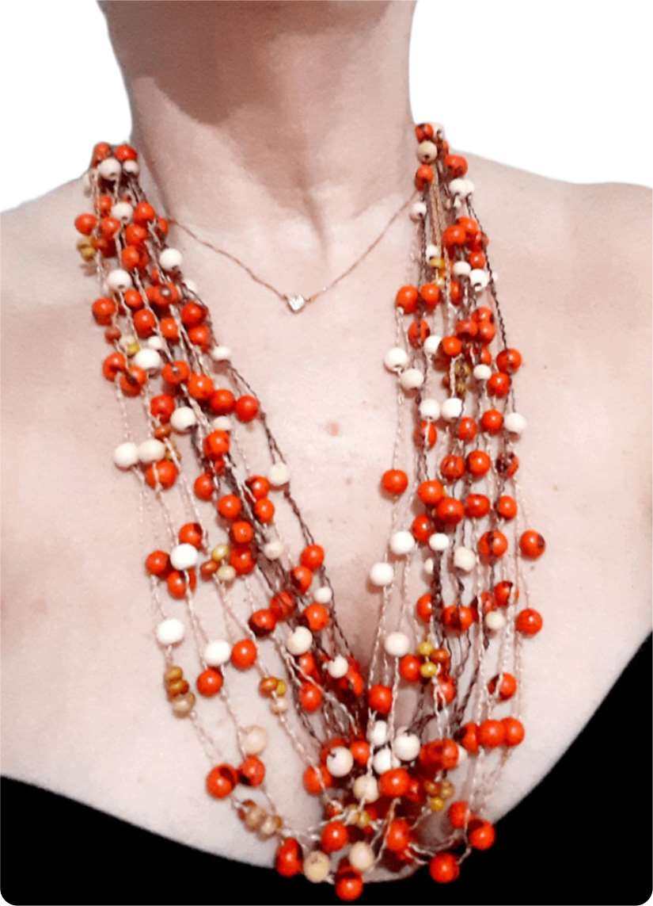
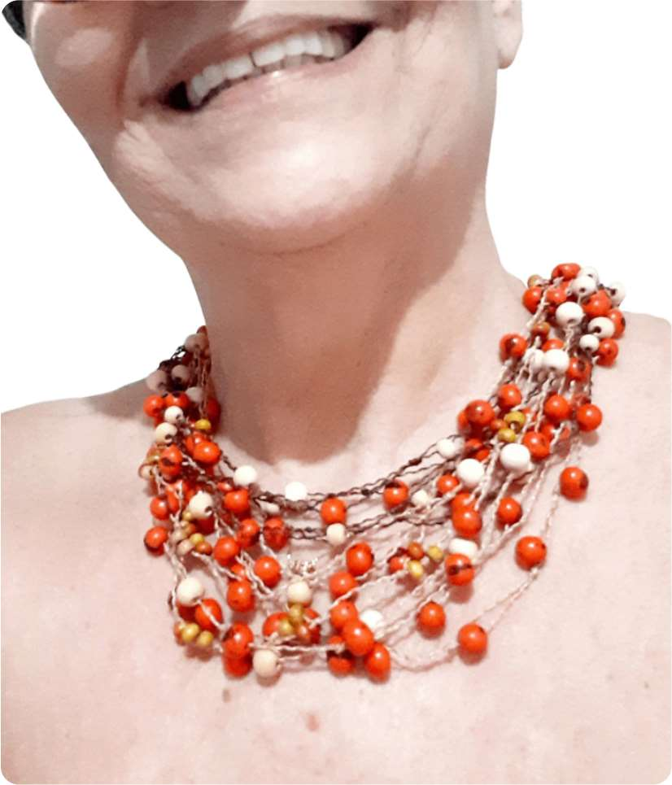

Colar Jacarandá CJ01
Material: fio encerado marrom, sementes de Paxiúba, Paxiubão, Buritirana, Açaí e casca de jacarandá do cerrado.
Por se tratar de uma peça montada artesanalmente, utilizando produtos naturais, pode haver variação de cor e tamanho nas peças.
R$159,00
Pedir pelo WhatsApp

Max Colar Açaí MA01
Material: fios encerado marrom e palha, sementes de Açaí de vários tamanhos e cores vivas. Feito com vários fios entremeados entre si, dando um visual de beleza e exclusividade. Pode ser usado de três formas diferentes.
Por se tratar de uma peça montada artesanalmente, utilizando produtos naturais, pode haver variação de cor e tamanho nas peças.
R$158,00
Pedir pelo WhatsApp
Max Colar Açaí MA02
Material: fio de algodão na cor marrom e sementes de Açaí vermelhas. Um colar exclusivo pra você causar onde quer que vá.
Por se tratar de uma peça montada artesanalmente, utilizando produtos naturais, pode haver variação de cor e tamanho nas peças.
R$148,00
Pedir pelo WhatsApp

Max Colar Açaí MA03
Material: fio de encerado na cor palha e sementes de Açaí naturais e rajadas.
Por se tratar de uma peça montada artesanalmente, utilizando produtos naturais, pode haver variação de cor e tamanho nas peças.
R$89,00
Pedir pelo WhatsApp

Max Colar Açaí MA04
Material: fio encerado na cor palha com sementes de Açaí naturais e continhas coloridas de madeira. Um lindo e delicado colar pra completar sua beleza e te aproximar da natureza.
Por se tratar de uma peça montada artesanalmente, utilizando produtos naturais, pode haver variação de cor e tamanho nas peças.
R$79,00
Pedir pelo WhatsApp
Max Colar de Açaí MA05
Material: fio encerado na cor marrom e sementes de Açaí verdes e vermelhas.
Por se tratar de uma peça montada artesanalmente, utilizando produtos naturais, pode haver variação de cor e tamanho nas peças.
R$158,00
Pedir pelo WhatsApp
Colar Jarina Fatiada CJ02
Material: fio encerado na cor marrom e sementes de Açaí pretas e corais com três pendentes fatiados de Jarina na cor preto.
Por se tratar de uma peça montada artesanalmente, utilizando produtos naturais, pode haver variação de cor e tamanho nas peças.
R$52,00
Pedir pelo WhatsApp

Colar Flamboyant CF01
Material: fio encerado na cor marrom com sementes de Flamboyant, Jatobá e Tento Carolina.
Por se tratar de uma peça montada artesanalmente, utilizando produtos naturais, pode haver variação de cor e tamanho nas peças.
R$79,90
Pedir pelo WhatsApp

Conjunto Max Colar e Brincos de Açaí MA06
Material: fio encerado marrom e sementes de Açaí nas cores verde abacate e preta. Sinta o poder da natureza com toda sua magia embelezando seu corpo!
Por se tratar de uma peça montada artesanalmente, utilizando produtos naturais, pode haver variação de cor e tamanho nas peças.
R$198,00
Pedir pelo WhatsApp

Colar Pereirinho CP01
Material: fio encerado e sementes de Jatobá, Paxiubão e Açaí e Pereirinho. Um colar exclusivo e lindo pra completar sua beleza e fazer muito sucesso.
Por se tratar de uma peça montada artesanalmente, utilizando produtos naturais, pode haver variação de cor e tamanho nas peças.
R$195,00
Pedir pelo WhatsApp